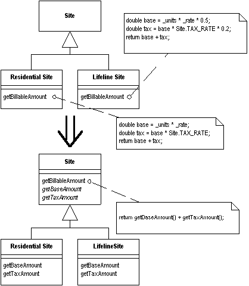

Form Template Method
You have two methods in subclasses that perform similar steps in the same order, yet the steps are different.
Get the steps into methods with the same signature, so
that the original methods become the same. Then you
can pull them up.

For more information see page
345
of Refactoring
| Refactoring Home | | Alphabetical List |